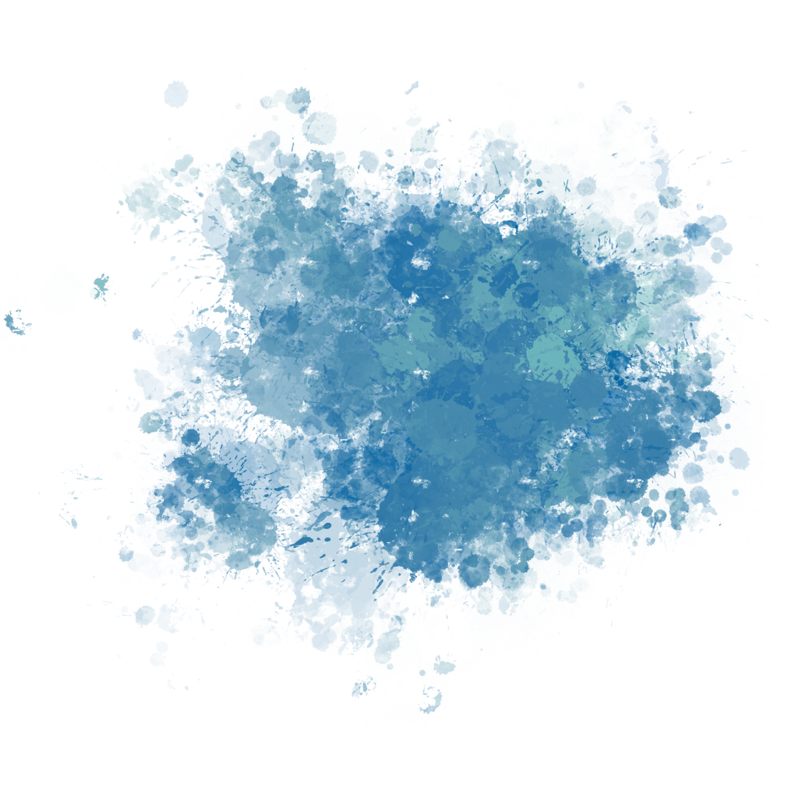

Artist Statement
[PLACEHOLDER] “Hello World” is often the first line of code written by first-time coders to make something visible. For me, it also reflects a recurring gesture in my practice: arriving, observing, and addressing the world through movement and encounter. More than a record of travel, this body of work engages with the familiar saying “读万卷书，行万里路”—to read extensively and to travel far. Rather than treating it as advice, I approach it as an open question. How do different forms of learning, classroom study and lived experience, shape growth in distinct ways? Throughout my travels, I continue to return to this question, asking what kinds of understanding emerge only through presence, distance, and time.